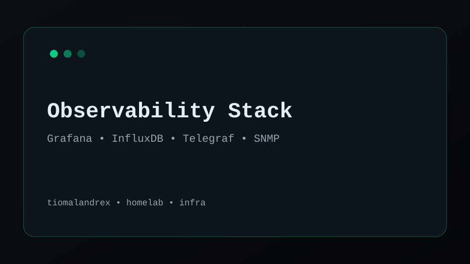
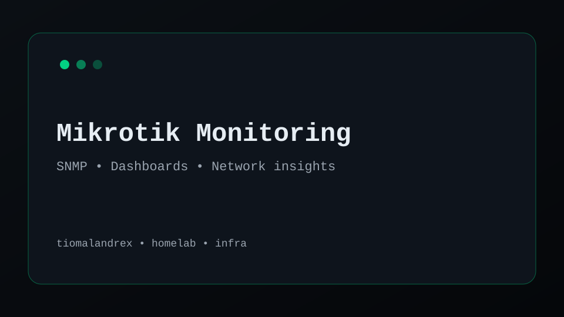
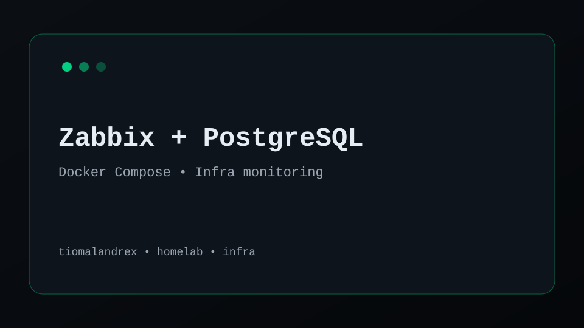
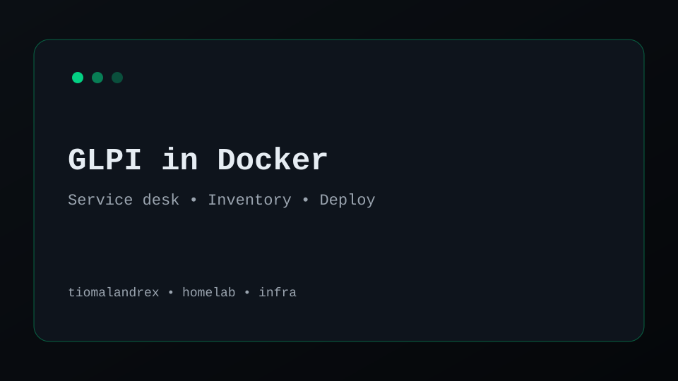
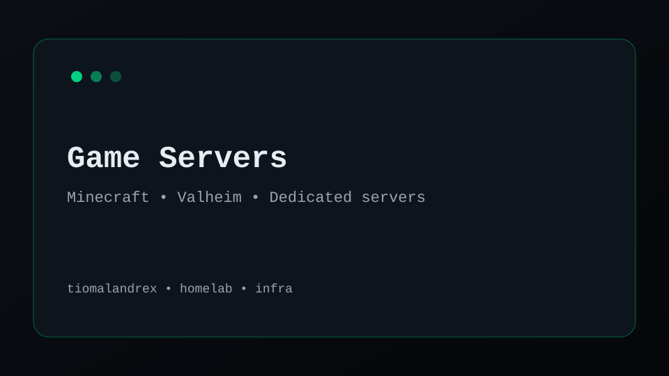
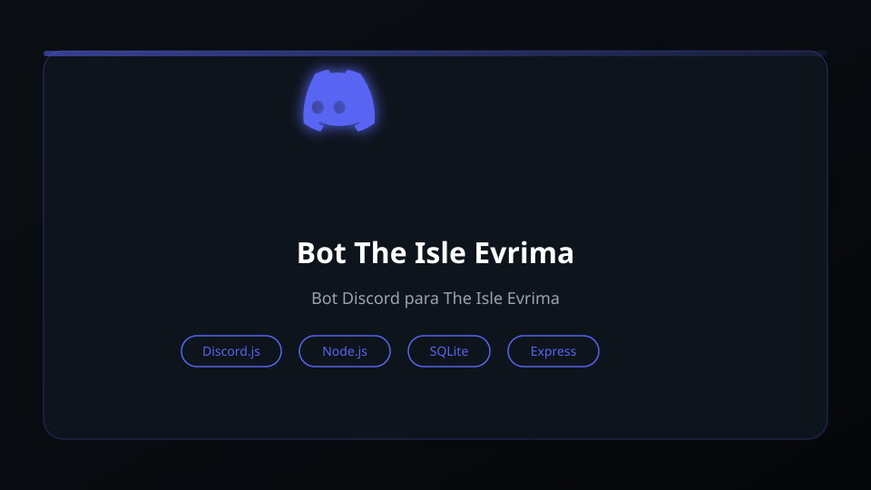
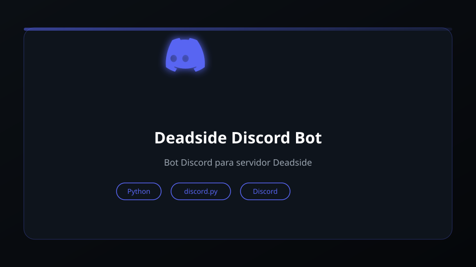

Observability Stack
Dashboards e métricas para serviços e rede (Grafana + InfluxDB + Telegraf/SNMP).
Infraestrutura, automação e observabilidade — montando ambientes confiáveis com Linux, Docker, redes e monitoramento. Apaixonado por homelab, self-hosted e servidores de jogos.
Oi! Eu sou o Leandro. Trabalho com infraestrutura e rotinas de automação, com foco em Linux, Docker, redes e monitoramento. No dia a dia monto stacks reproduzíveis, crio dashboards, acompanho métricas e mantenho ambientes self-hosted confiáveis e documentados.
Tenho experiência com ferramentas como Grafana, InfluxDB, Telegraf, Zabbix e Mikrotik. Curto resolver problemas de conectividade, automatizar tarefas com scripts e administrar servidores de jogos para comunidades. Também estou desenvolvendo habilidades em Desenvolvimento Web com projetos práticos.
Tem algo em mente? Fique à vontade para me contactar. 👋


Grafana + InfluxDB + Telegraf + SNMP para enxergar rede e serviços em tempo real. Alertas configurados e histórico consistente para troubleshooting rápido.
Stacks em Docker/Compose para serviços internos — ITSM, monitoramento, docs e apps. Ambientes reproduzíveis com foco em manutenção e estabilidade.
Métricas e visibilidade de Mikrotik via SNMP: interfaces, tráfego, latência, disponibilidade e alertas configurados para operação proativa.
Ambientes dedicados com configuração, manutenção, backups automatizados e monitoramento básico para uptime. Minecraft, Valheim, Deadside, MTA e mais.
Administro e mantenho servidores dedicados de jogos para comunidades online — com automação, backups e bots Discord para integração total.
Servidor dedicado com bot Discord integrado via RCON — armazenamento de dinos, trocador de skins, economia e estatísticas de jogadores.
Servidor dedicado com bot Discord para gerenciamento e interação em tempo real — automação de tarefas administrativas e comunicação entre plataformas.
Servidor Java/Bedrock com plugins customizados, backups automatizados, monitoramento de performance e configurações de redes multijogador.
Servidor dedicado com mods, backups programados e monitoramento de uptime para comunidade. Deploy via Docker para fácil manutenção.
Servidor MTA com scripts Lua customizados, administração de banco de dados de jogadores e automação de eventos e sistemas de jogo.
Infraestrutura completa para game servers: backups automáticos, monitoramento de uptime, bots Discord para controle remoto e scripts de automação.

Dashboards e métricas para serviços e rede (Grafana + InfluxDB + Telegraf/SNMP).
Stack de observabilidade focada em confiabilidade: coleta de métricas, alertas e visualização para serviços e rede, com histórico consistente e troubleshooting rápido.

Monitoramento de RouterOS com métricas úteis e visão de tráfego em tempo real.
Coleta de métricas do Mikrotik via SNMP/Telegraf, com dashboards orientados a operação: interfaces, latência, disponibilidade e consumo de banda.

Deploy e ajustes de monitoramento enterprise com banco PostgreSQL.
Ambiente de monitoramento com Zabbix e PostgreSQL, pensando em manutenção, backups e clareza de operação para times de infraestrutura.

ITSM e inventário em container — deploy, configuração e manutenção.
Configuração de GLPI em Docker para centralizar chamados e inventário de ativos, com foco em estabilidade e replicabilidade do ambiente.

Servidores dedicados e automação para comunidades (Minecraft, Valheim, Deadside, MTA).
Configuração, manutenção e automação de servidores dedicados de jogos, com backups, otimizações de performance e monitoramento de uptime.

Bot Discord completo com RCON, economy, armazenamento de dinos e interface web.
Bot com integração entre servidor de jogo, Discord e interface web. Inclui armazenamento de dinossauros, trocador de skins, economia, estatísticas e controle via RCON.

Bot Discord para gerenciamento de servidor Deadside e interação com jogadores.
Bot para gerenciamento e interação em servidor de jogo Deadside via Discord, com automação de tarefas e comunicação entre plataformas em tempo real.
Sinta-se à vontade para entrar em contato comigo. Estou disponível para conversar sobre projetos, colaborações e oportunidades.